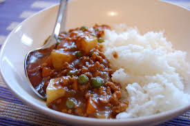

Homepage
Curry Rice

Curry rice is an easy dish, perfect for serving with curry. A couple of pantry staples and
you'll be on your way to making a fine dish that everyone will enjoy.
This dish is a favorite among Japanese people. It gained popularity as it was easy to prepare
for large groups, as well as pre-made mixes being sold in stores all over the globe.
Ingredients
- Jasmine Rice - 2 cups
- Onion - 1
- Garlic + Ginger - 2 cloves and 1 tsp, respectively
- Turmeric - 1 tsp
- Curry powder - 2 tsp
- Water / Stock - 4 cups
- Frozen peas (optional) - 1 cup
- Salt - 1 tsp
Steps
- Heat a tablespoon of oil in a medium-sized pot. Add the onion and saute until soft and translucent.
- Add the garlic, ginger and spices and cook for 30 second.
- Stir in the rice then pour in the water/stock and season with salt.
- Allow to simmer until most of the water has been absorbed (10 minutes) then stir in the peas.
- Cover with a lid then turn the head down to its lowest setting.
- Allow to cook gently for 5 minutes then turn the heat off and allow the rice to steam for 10 minutes.
- Once cooked, fluff with a fork, season to taste and serve.